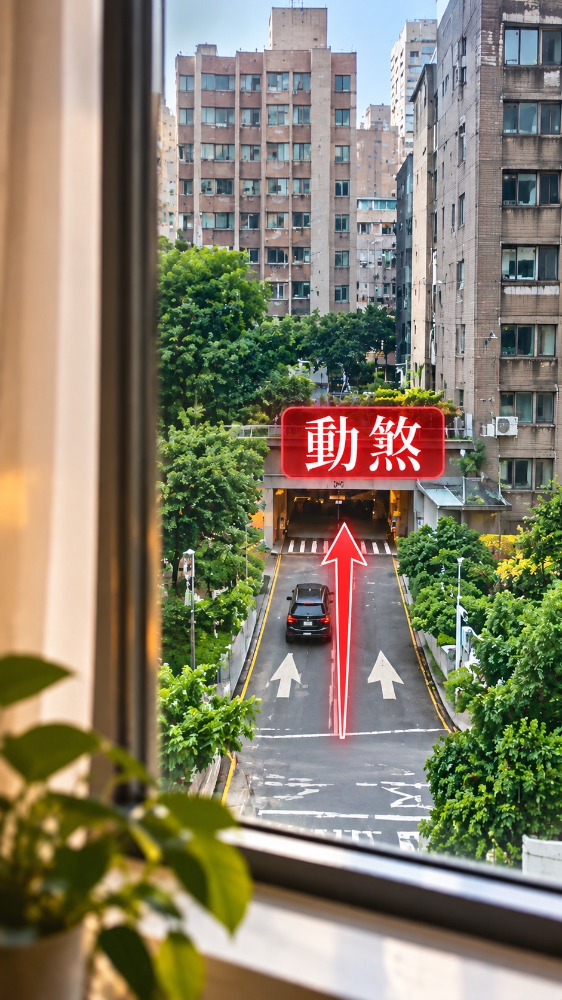
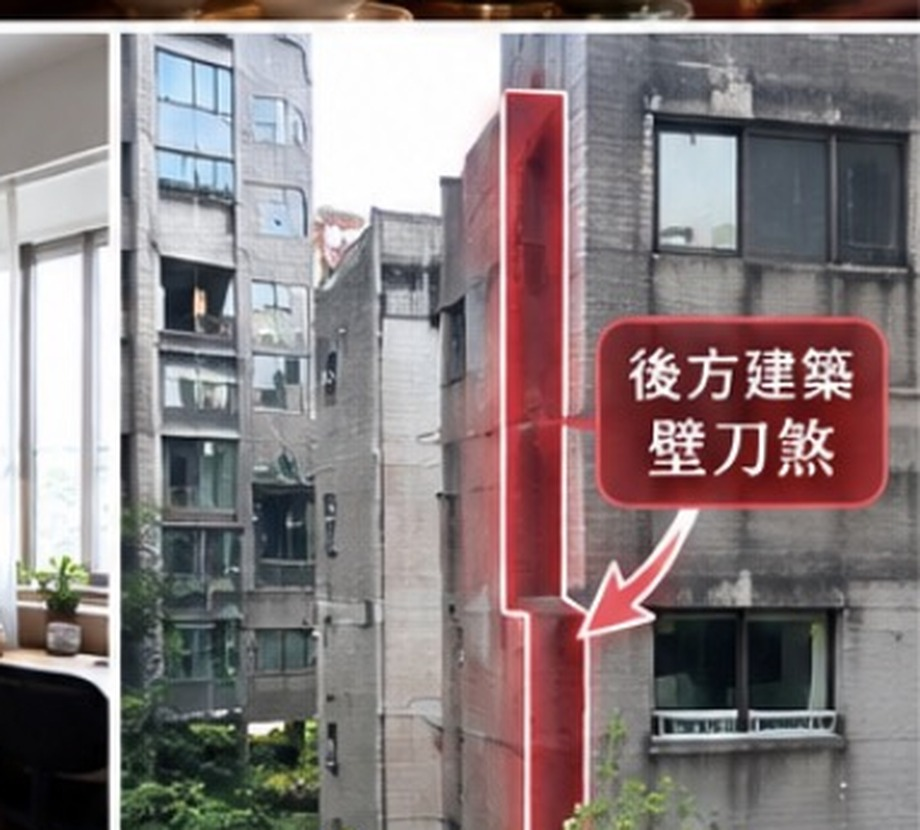
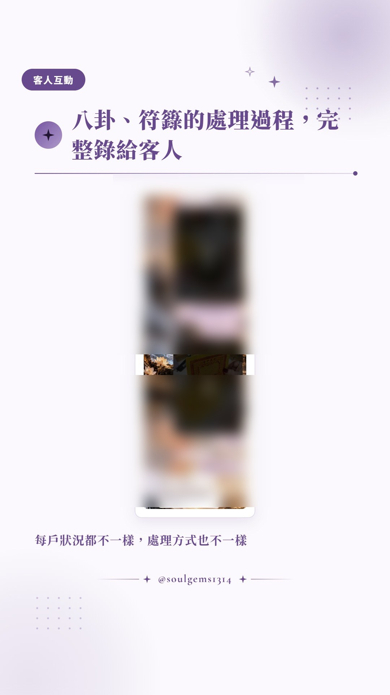
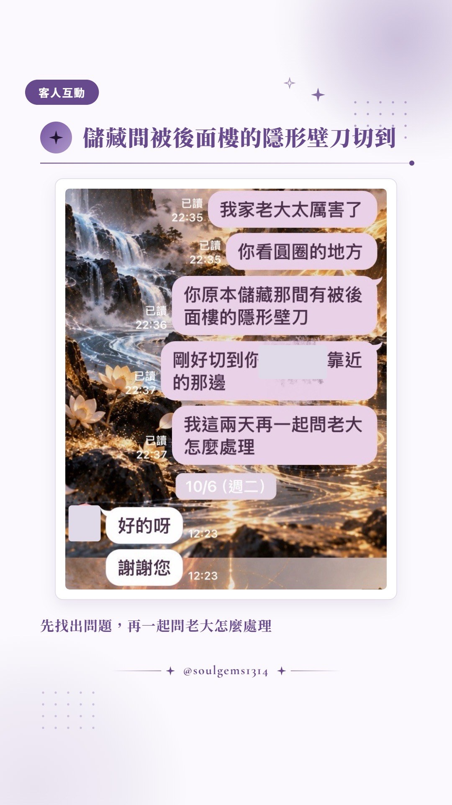

01 / THE STORY
走進這間家，先注意到窗外的車道
這次到台北一處住宅進行居家陪伴。現場觀察時，玄鈺老師發現住宅主要正面窗戶，正對著另一棟大樓的停車場出入口。
依照傳統風水的說法，這類車輛進出、動線面向住宅的格局，常被稱為「動煞」。
後續依個人神佛信仰進行空間儀式時，玄鈺老師走進其中一個房間，感受到一陣明顯的暈眩。因為這個主觀感受，決定再查看周邊空照資料，才留意到後方建築稜線與房間的相對位置，在傳統風水裡被稱為「壁刀煞」。
暈眩是當時個人感受，不能據此認定由建築格局造成。
房子不是說搬就能搬。但每天住的家，有些窗外的細節，值得重新觀察。
現場觀察居家能量調整真實互動紀錄這次到台北一處住宅進行居家陪伴。現場觀察時，玄鈺老師發現住宅主要正面窗戶，正對著另一棟大樓的停車場出入口。
依照傳統風水的說法，這類車輛進出、動線面向住宅的格局，常被稱為「動煞」。
後續依個人神佛信仰進行空間儀式時，玄鈺老師走進其中一個房間，感受到一陣明顯的暈眩。因為這個主觀感受，決定再查看周邊空照資料，才留意到後方建築稜線與房間的相對位置，在傳統風水裡被稱為「壁刀煞」。
暈眩是當時個人感受，不能據此認定由建築格局造成。


圖片經過示意處理，不標示客戶詳細地址或精確房間位置。
依照玄鈺老師的神佛信仰與現場觀察，這次針對不同方向安排不同的信仰儀式與客製用品。
針對停車場出口的外部動線，安排客製八卦鏡的處理方式。
針對後方建築格局，採用符文搭配儀式的方式處理。
每個家的格局和居住需求不同，不會只靠一套固定配置。基於儀式內容與客戶隱私，符文、材料配比、能量指令及操作順序不公開。
影片呈現現場觀察、空照資料比對，以及玄鈺老師當時的個人感受。
這些是服務過程中的匿名LINE互動：客製用品的製作與交付、客戶確認使用位置，以及後續對建築格局的討論。它們呈現的是實際服務紀錄，並非改善成效見證。


本頁為審核預覽。正式公開前，須取得客戶對匿名對話的公開同意，並再次確認圖中無可辨識住處資訊。
外面的建築不一定能改變，但我們可以更仔細地觀察自己的生活空間，從居家動線、日常舒適度與適合自己的信仰實踐開始，好好照顧每天住的家。
神佛給方向，人生靠準備。